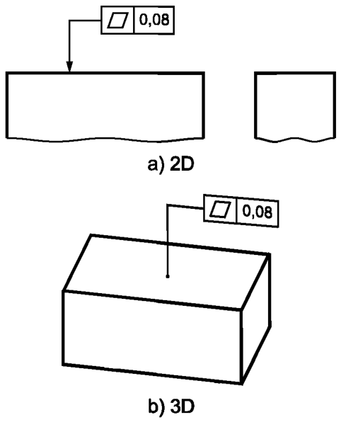
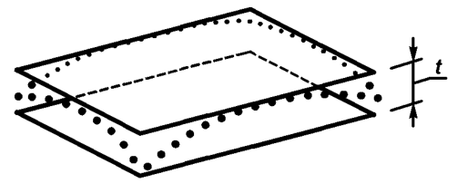

Выявленная нормируемая поверхность должна быть расположена между двумя параллельными плоскостями, расстояние между которыми равно 0,08, см. рисунок ниже
Поле допуска ограничено двумя параллельными плоскостями, расстояние между которыми равно значению допуска t, см. рисунок ниже
